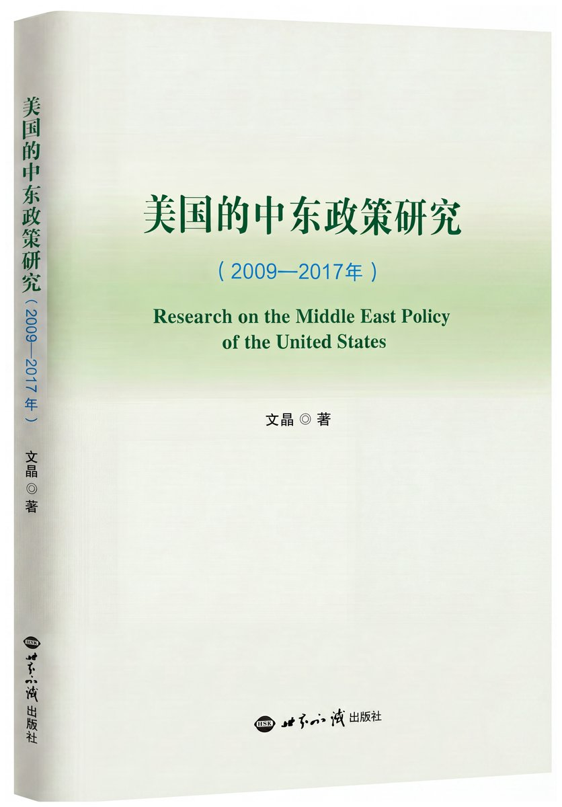
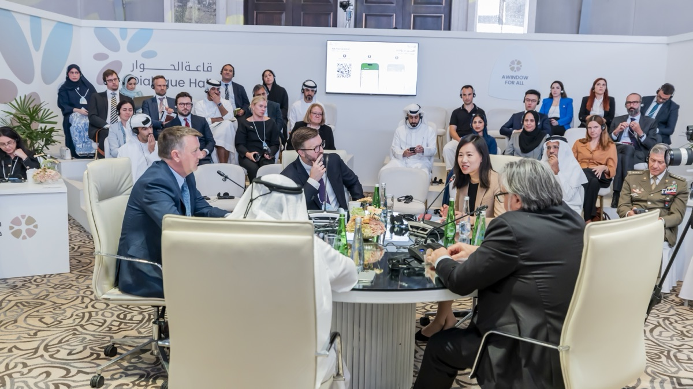

Fellow, Center for International Security and Strategy (CISS), Tsinghua University
Scholar of U.S. foreign policy and Middle East politics; former senior journalist covering 40+ countries.
Author of Research on the Middle East Policy of the United States (2009–2017) and frequent commentator for The New York Times, BBC, CGTN and other leading outlets.

A systematic study of U.S. policy toward the Middle East from 2009 to 2017, drawing on Dr. Wen's research and field experience in the region.
View all →Recent forums and events

For media inquiries, speaking invitations and academic collaboration
jodiewen@tsinghua.edu.cnCenter for International Security and Strategy (CISS), Tsinghua University, Beijing, China